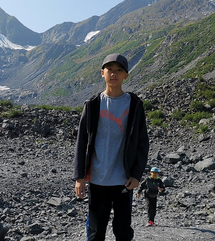

I am 14 years old, and I am the
older brother in a family of four.
I have been in four schools
before Victoria Park. I attended
the gifted program from Grade 4 to
Grade 8, and attended many
extracuriccular activities. I
especially enjoyed playing chess.

Photo of me when I was 11
I have been in four schools
as of right now, not counting
VPCI. My first school was Town
Center Monetessori School,
where I learned until Grade
2. In grade 3 I went to
Rippleton Public School, then
Denlow. After Denlow I went to
St.Andrews MS.